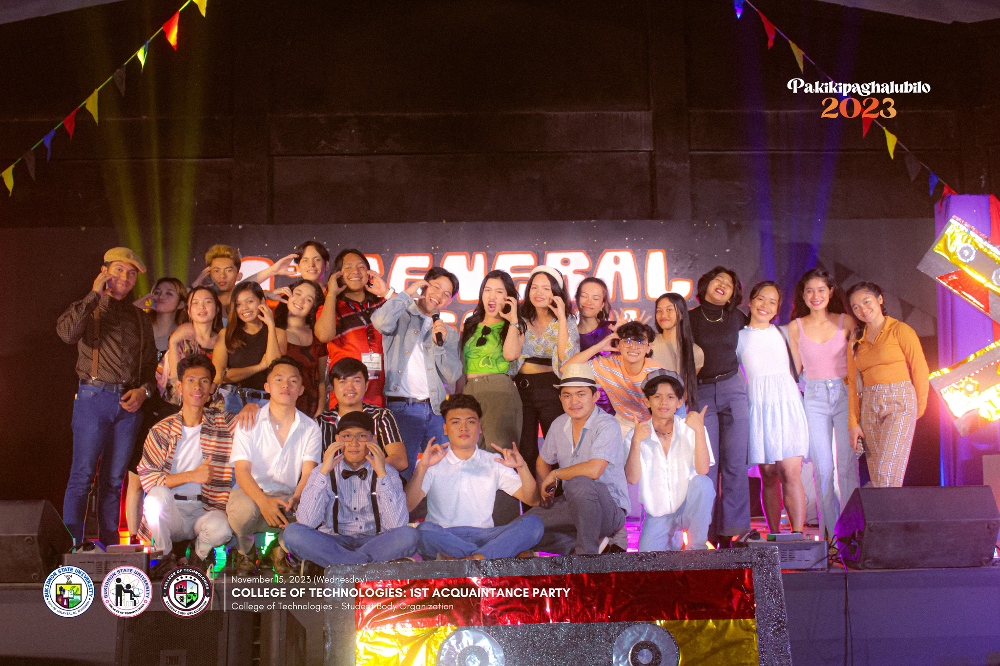
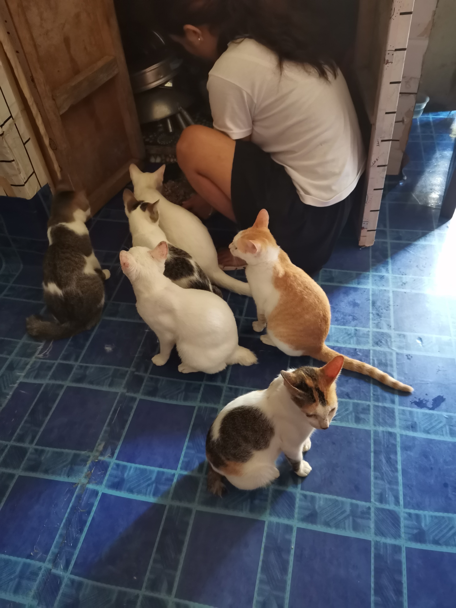
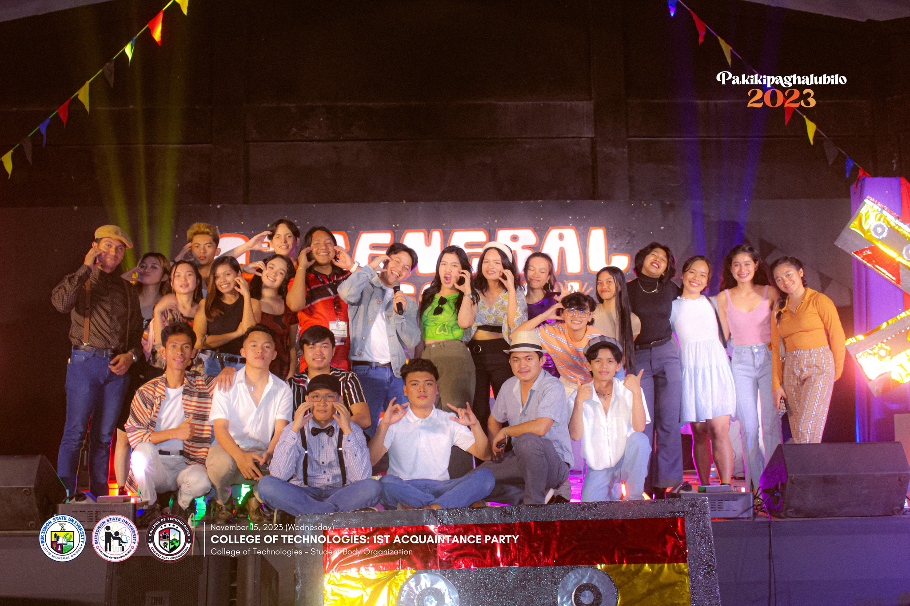
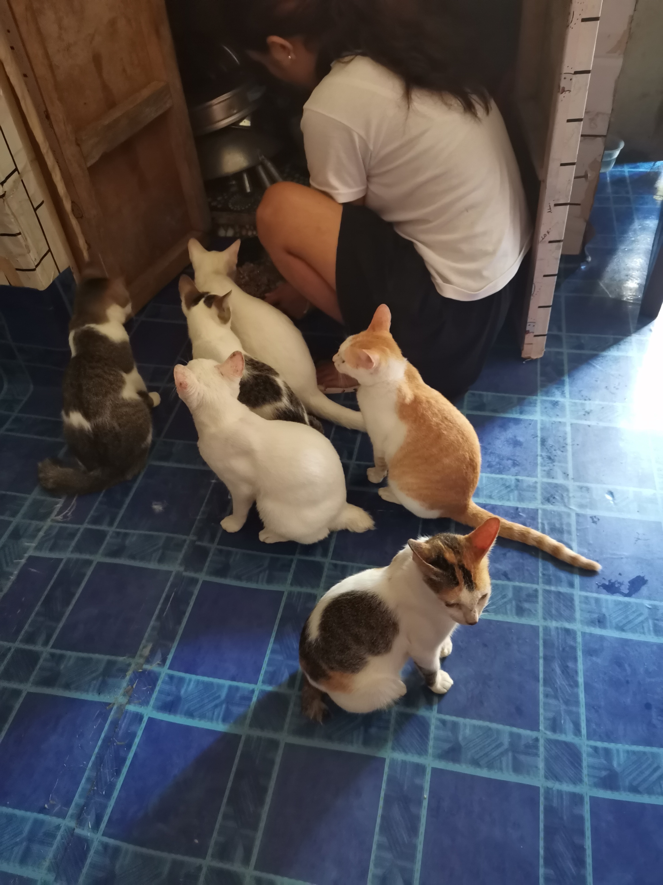

I'm Mariele Joyce R. Gillang, and it's wonderful to connect with you digitally! I am a first-year student pursuing a bachelor's degree in Information Technology at Bukidnon State University. I formerly resided in Zone 2 Barangay 11 Impalambong, Malaybalay City. I frequently lose myself in the engrossing realms of manga and anime during my free time. I adore the inventiveness that these media bring to life, whether it is through the complex narratives or the exquisitely animated sequences. I enjoy binge-watching Netflix series, ranging from drama to science fiction, while I'm not sulking in the realm of animation. My ability to adapt and learn new things is one of my strongest professional traits. I do best in dynamic settings with lots of new information to learn. Being an eager student has not only helped me advance in my work but also given me the freedom to pursue a variety of interests and hobbies. Another essential component of my skill set is adaptability. I appreciate pushing myself to take on new challenges and see change as a chance for personal development. Because of my capacity to adapt, I have been able to succeed in a variety of professional jobs and pursue a wide range of hobbies, weaving a rich tapestry of experiences. That's why I'm always eager for the next adventure, both personally and professionally, whether it's learning something new, improving my learning and adaptability abilities, or immersing myself in a new anime series. Anticipating the voyage that is ahead!

Information Technology emerges as a linchpin in the quest for sustainable solutions, offering a multifaceted approach to addressing environmental challenges. From optimizing resource usage to fostering renewable energy integration, managing e-waste, and promoting Green IT practices, IT stands at the forefront of creating a more sustainable and resilient future. As the world increasingly relies on technology, the symbiotic relationship between IT and sustainability becomes ever more critical in shaping a greener and more sustainable world.

The historical evolution of computing is a testament to human ingenuity and the relentless pursuit of technological progress. From ancient mechanical devices to the era of quantum computing, each phase has contributed to the development of increasingly powerful and sophisticated computational systems. As we stand on the precipice of a new technological frontier, the historical journey of computing continues to shape and redefine the way we live, work, and understand the world around us.
As computers become integral to our daily lives, understanding and effectively addressing common component issues are essential skills. By employing systematic diagnostic approaches and staying informed about hardware and software interactions, users can navigate through the myriad challenges associated with computer components. This knowledge not only enhances troubleshooting capabilities but also empowers users to make informed decisions about maintenance, upgrades, and overall system health, ensuring a smoother and more reliable computing experience.
In the vast realm of web development, each lesson is a brushstroke on the canvas of digital creativity. HTML, CSS, JavaScript, responsive design, version control, and server-side scripting form a symphony of knowledge, converging to empower the development of captivating, user-centric web experiences. My favorite lesson in web development is not just a technical endeavor; it's a journey of self-discovery, a fusion of art and logic, and a continuous exploration of the limitless possibilities that unfold with every line of code. As I navigate through this ever-evolving landscape, each lesson becomes a stepping stone, propelling me forward into the captivating world where innovation thrives and digital dreams come to life.
 


